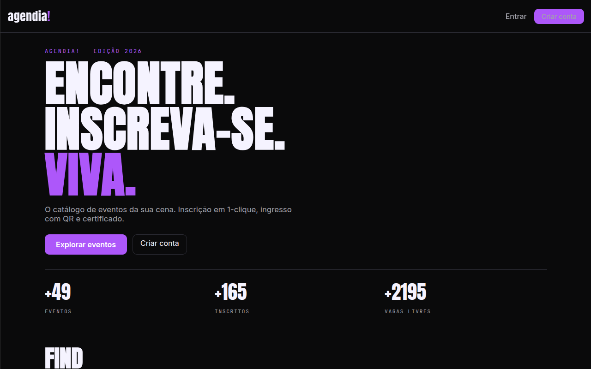
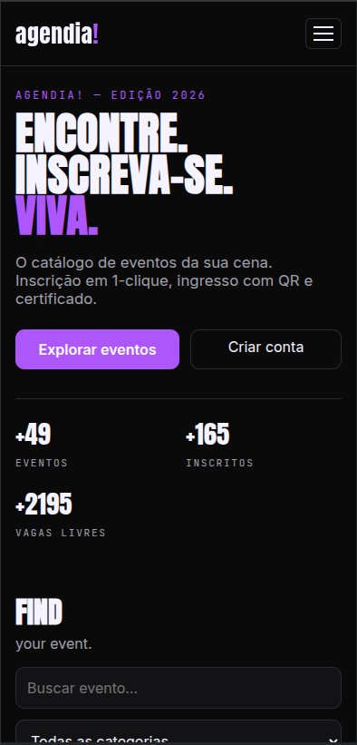
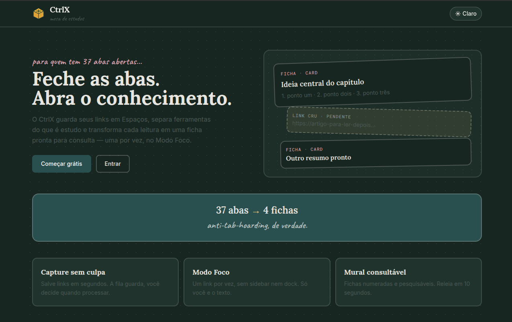
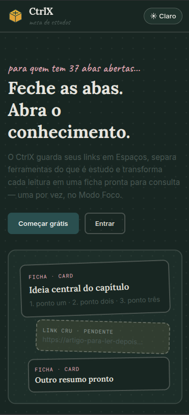
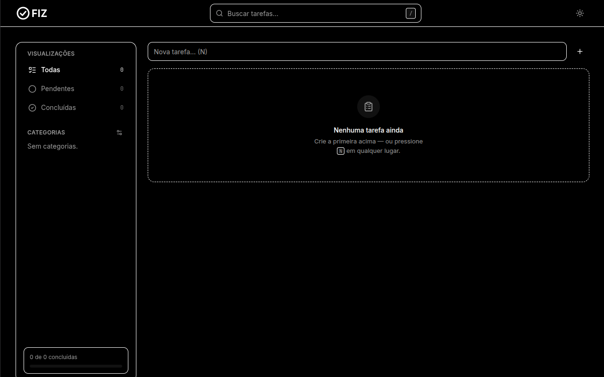
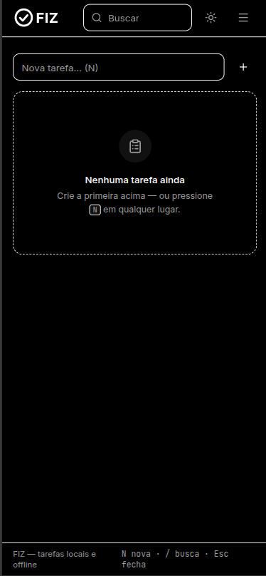
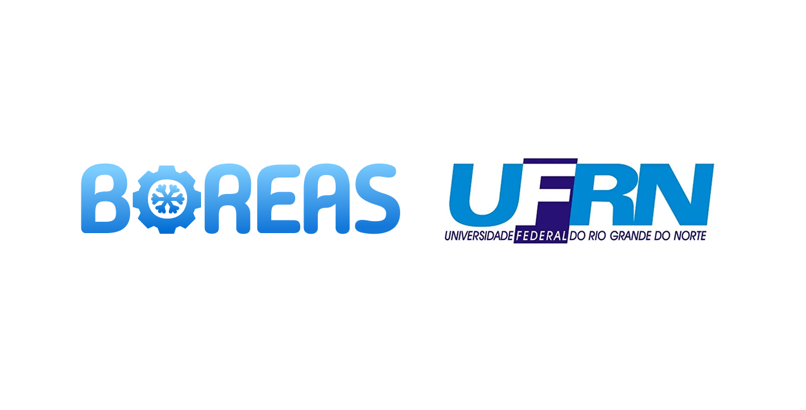

Agendia
Plataforma de eventos com identidade tech dark: catálogo público, inscrição em 1-clique, waitlist com promoção automática, ingresso com QR, check-in, certificados e painel do organizador.


Arquivo / 04 trabalhos
Sem demo inventada: contexto, responsabilidade e decisões de cada trabalho. O Boreas é sistema interno da UFRN, sem acesso público.
Plataforma de eventos com identidade tech dark: catálogo público, inscrição em 1-clique, waitlist com promoção automática, ingresso com QR, check-in, certificados e painel do organizador.


Workstation de produtividade para estudantes e pesquisadores: guarda links em Spaces, separa ferramentas de uso diário (Dock) da fila de rascunhos e transforma cada leitura em ficha de estudo (Zettelkasten + Active Recall) pelo Modo Foco — um link por vez, sem distrações.


Task manager moderno, rápido e local-first: funciona offline (PWA) e persiste no navegador. Acompanha uma API Express opcional (api/) para sincronizar dados — sem ela, o app usa localStorage.


Sistema institucional da UFRN para gestão e organização de manutenções de ar-condicionado — equipamentos, ordens de serviço e histórico. Modelagem de dados, regras de negócio, APIs e integração com o frontend; manutenção contínua.

Python · Django · Node.js · React · Next.js · TypeScript · ORM · REST
Fluxo real → modelo de dados → regras no backend → contrato de API → evolução registrada.
UFRN · Natal-RN · contato